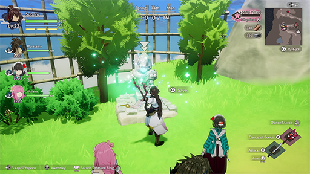
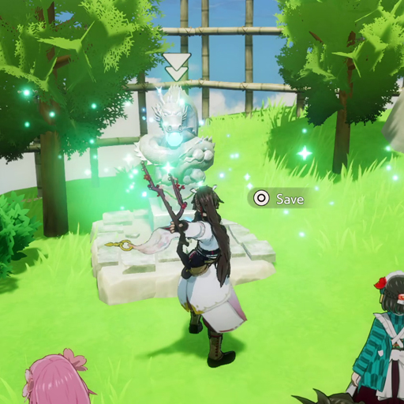
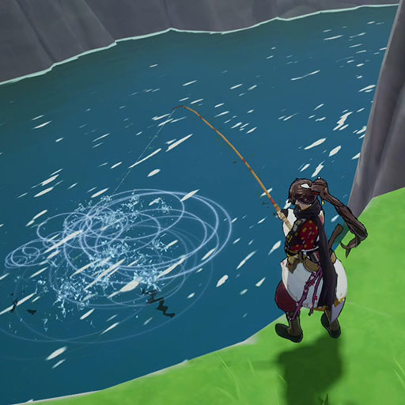
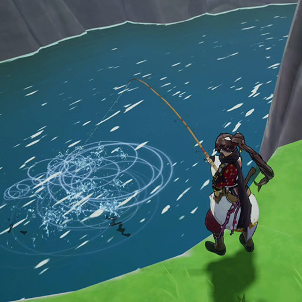
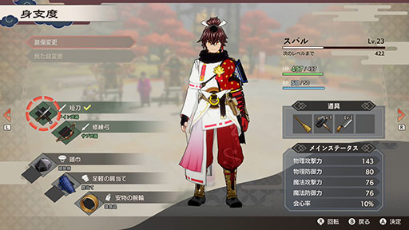
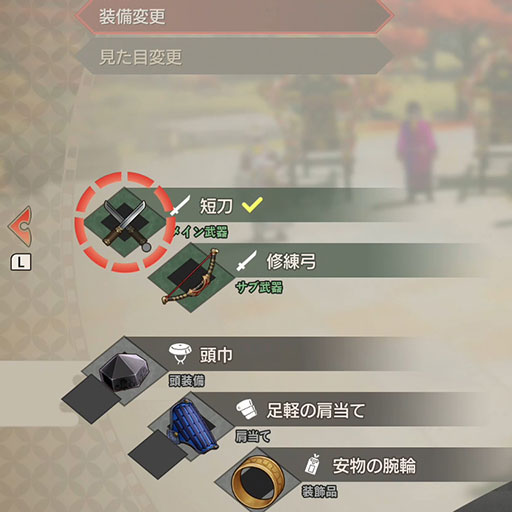
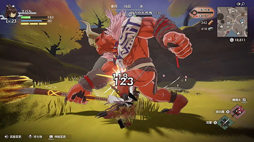

-
Save Statues
 Perform the Dance of Bonds before save statues to save your game. You can warp to any save statue you've activated by selecting them on your map.
-
Fishing Holes
 

If you spot shadows in the water, that means you can fish there. Choose where to drop the bobber with the L Stick, then press A to cast your line. When the bobber gets pulled underwater, press A to reel in the fish.
-
Changing Equipment
 Access the Gear menu to change your weapons, armor, and accessories. You can also set your primary and secondary weapons, as well as change your armor's appearance.
-
Dual Blades

These make up for their short range with double strikes in every hit. Unleash a barrage of blows to overwhelm your foes.
-
Combat Basics
Press the Y Button to attack with your equipped weapon. Press the Left Button to swap between your primary and secondary weapons.
-
Stun Gauges
The Stun Gauge will appear when facing a powerful foe. Fill up this gauge to stun them and temporarily lower their defense, then attack repeatedly for massive damage.